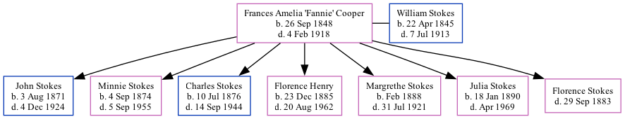

Frances Stokes (née Cooper) 1848 - 1918
[ Home ] | [ Calendar ] | [ Surnames Index ] | [ Family History ]Frances Cooper, the wife of William Foster Stokes (the three times great-uncle of Michele Copp (née Phillips)), was born in Georgia on Sep 26, 18481 and married William (with whom she had 7 children: John William, Minnie Amelia, Charles Albert, Florence Newton, Margrethe Grace, Julia M and Florence Josephine) in Troup, Georgia, USA on Jul 12, 18702. In 1900, she lived in Decatur, De Kalb, Georgia3.
She died on Feb 4, 1918 in Fulton County, Georgia1 and was buried in Atlanta, Fulton County, Georgia after Feb 4, 19181.
Children
- John William was born on Aug 3, 1871
- Minnie Amelia was born on Sep 4, 1874
- Charles Albert was born on Jul 10, 1876
- Florence Newton was born on Dec 23, 1885
- Margrethe Grace was born in Feb 1888
- Julia M was born on Jan 18, 1890
Citations
- U.S., Find A Grave Index, 1600s-Current Ancestry.com Operations, Inc.
- 1900 United States Federal Census Online publication - Provo, UT, USA: MyFamily.com, Inc., 2004.Original data - United States of America, Bureau of the Census. Twelfth Census of the United States, 1900. Washington, D.C.: National Archives and Records Administration, 1900. T623, 1854 rolls.
- 1900 United States Federal Census Online publication - Provo, UT, USA: MyFamily.com, Inc., 2004.Original data - United States of America, Bureau of the Census. Twelfth Census of the United States, 1900. Washington, D.C.: National Archives and Records Administration, 1900. T623, 1854 rolls.
Family Tree
Generated by ged2site. Last updated on Sep 9, 2024